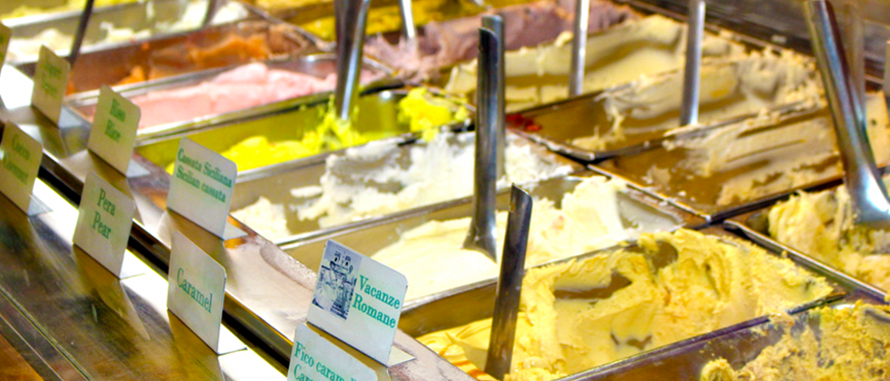

くまくまアイスの３つのこだわり
くまくまアイス のコンセプト

「暑い熊谷を、美味しいジェラートで幸せに！」
暑い熊谷を美味しいジェラートで幸せにしたい！という思いを胸にジェラート作りの修行へ…場所 は本場イタリア！イタリアで食べたジェラートはフルーティで本当に美味しい！「この味を熊谷で も再現しなくちゃ、たくさんの方に伝えなくちゃ。」と5 年間、ジェラートを食べたり作ったりし て学んできました。
くまくまアイス 店名の理由
ジェラート専門店ですが子供も大人も、おじいちゃんおばあちゃんも、老若男女たくさんの方に気 軽に呼んでいただきたくって、馴染みのある「アイス」という言葉を選び、店名は「くまくまアイ ス」にしました。